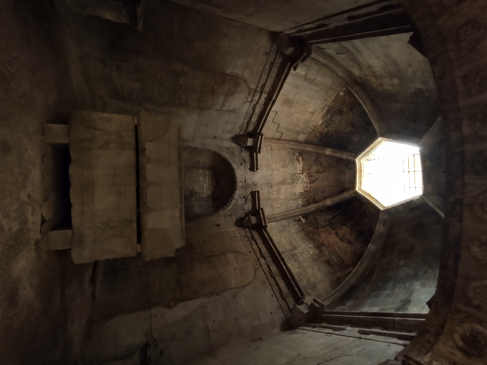

Slytherin
Las mazmorras. Luz verdosa del lago filtrándose por los ventanales.

"¡SLYTHERIN!" La mesa de las serpientes aplaude con una cortesía helada. Draco Malfoy le hace sitio a su lado con una sonrisa de quien ha ganado algo. Harry se sienta sin saber si acaba de entrar a un hogar o a una trampa.
Esa noche, en la sala común, Draco baja la voz: el perro de tres cabezas del tercer piso protege algo, y Snape, el jefe de la casa, mira a Harry con una mezcla de sorpresa y cálculo. Podría ganarse un aliado poderoso o convertirse en peón de otros.